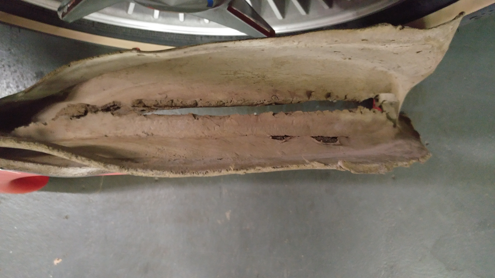

Below are pictures of our original dash pad removed from the 1962 in 1980 or there about.
Things you’ll notice is how rugged the original cutouts were, how the stands on the back of the radio speaker bezel were trimmed out but the foam was left in place, and the fact that no foam was ever removed from the back side of the dash pad on the passenger side.
Also note: Very little glue is required to install a dash pad properly. The dash insert, the speedo/tach housing, speaker bezel, mirror support, upper and lower moldings and the windshield frame are quite adequate in holding the pad in place once it’s installed. about the only place I put glue is on the forward edge where the dash pad goes under the windshield frame and this is to hold it so the holes can be cut for the frame.
Below is a top picture of the original pad, it’s been drug out so many times the vinyl is tearing so I figured I’d better picture it up before time takes it out of the picture.
The next picture is radio speaker cut out. note the foam is still under the vinyl where the boss on the speaker stud passed through, it will collapse if you just remove the top vinyl A cheating trick to this that once you get the dash pad in place, poke the holes for the radio speaker and then tighten up the nuts from below, leave it a few hours, remove the bezel and there will be perfect impregnated outlines of there to remove the vinyl.
The next picture is of the entire grab bar area and where to cut.
The next picture is a close up of the grab bar outer cutout.
The picture below is the passenger side inner cut out.
The picture below is driver side inner cut out for the dash cluster.
The picture below is the driver side outer cut out for the dash cluster.
The picture below is the driver side dash end cap and how it was cut from the factory, the passenger side matches this exactly.
The next picture is of the back side of the original pad behind the grab bar insert. Notice all the original foam is still in place. We made a puller tool you can make yourself at home for penny’s that will make the dash insert a one man job even with the foam in there. I’ve seen instances where people suggest removing the foam from behind this but you really don’t want to do this, the foam will compress and hold the dash pad in place once the nuts and proper torque is applied. Information on the grab bar installation tool you can make
